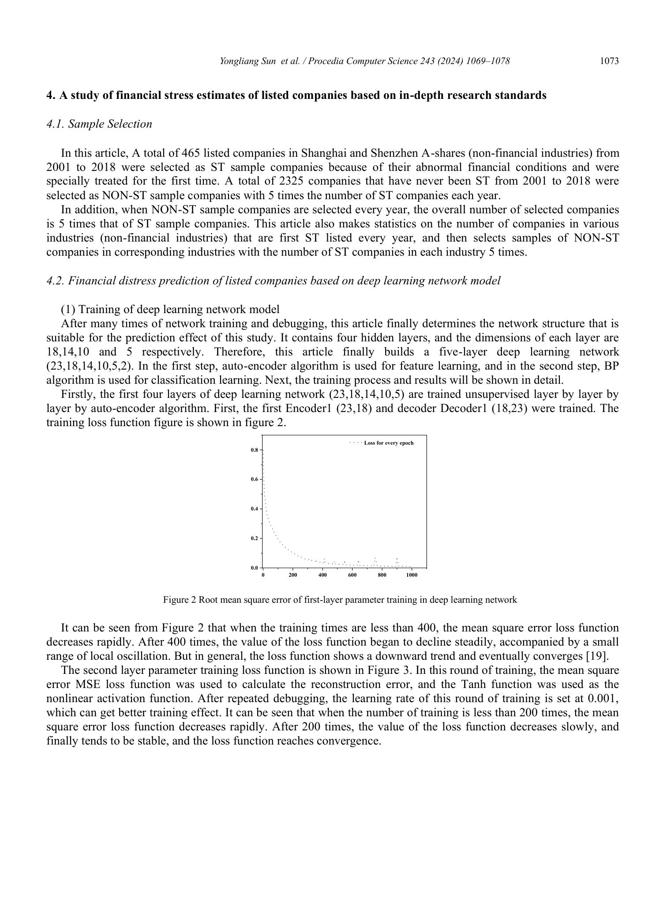

Dự Báo Kiệt Quệ Tài Chính Doanh Nghiệp Dựa Trên Mô Hình Học Sâu (Deep Autoencoder & Phân Loại)
Nhằm giải quyết hạn chế của các mô hình truyền thống trong việc mô tả nguyên nhân khủng hoảng tài chính, nghiên cứu này ứng dụng mô hình học sâu (Deep Learning) đa tầng để nâng cao hiệu quả dự báo kiệt quệ tài chính (Financial Distress). Nghiên cứu lựa chọn 465 công ty niêm yết cổ phiếu hạng A tại sàn Thượng Hải & Thâm Quyến (2001–2018) bị cảnh báo đặc biệt (Special Treatment - ST) lần đầu, cùng 2.325 công ty đối chứng Non-ST. Hệ thống 23 chỉ số tài chính được xây dựng trên 5 khía cạnh cốt lõi. Mô hình kết hợp 4 tầng ẩn Encoder để học đặc trưng phi giám sát và tầng phân loại có giám sát. Kết quả kiểm nghiệm tại thời điểm T-3 (trước biến cố 3 năm) khẳng định mô hình học sâu đạt độ chính xác chung 78,33% và độ chính xác dự báo công ty kiệt quệ lên tới 82,00%, vượt trội so với Hồi quy Logistic (71,00%) và Mạng BP nơ-ron truyền thống (69,67%).
1 ĐẶT VẤN ĐỀ & BỐI CẢNH NGHIÊN CỨU
Doanh nghiệp trong nền kinh tế thị trường cạnh tranh khốc liệt luôn đối mặt với nhiều rủi ro, trong đó rủi ro tài chính là rủi ro mang tính sống còn. Khi một doanh nghiệp rơi vào khủng hoảng tài chính, nó sẽ kéo theo tổn thất to lớn cho các nhà đầu tư, chủ nợ, hệ thống ngân hàng và làm giảm sút tính ổn định của thị trường chứng khoán.
Phần lớn các doanh nghiệp không sụp đổ đột ngột mà trải qua một quá trình suy thoái tài chính tích tụ dần dần. Do đó, việc xây dựng mô hình cảnh báo sớm có khả năng "bắt bệnh" trước 3 năm giúp nhà quản trị kịp thời xoay chuyển tình thế, đồng thời hỗ trợ kiểm toán viên đưa ra phán đoán chính xác về tính hoạt động liên tục (Going Concern).
Tại thị trường chứng khoán Trung Quốc, quy chế Cảnh báo đặc biệt (ST) được áp dụng bắt buộc đối với các công ty niêm yết có tình trạng tài chính bất thường (ví dụ: lỗ ròng 2 năm liên tiếp hoặc vốn chủ sở hữu thấp hơn vốn điều lệ). Đây là chỉ báo thực nghiệm chuẩn mực nhất cho tình trạng kiệt quệ tài chính trước khi doanh nghiệp bị hủy niêm yết hoặc phá sản.
2 KIẾN TRÚC MÔ HÌNH HỌC SÂU ĐA TẦNG
Mô hình được cấu trúc thành hệ thống đa cấp: Tầng đầu vào tiếp nhận 23 chỉ tiêu tài chính, đi qua 4 tầng ẩn Encoder để nén và học đặc trưng không giám sát, sau đó chuyển sang tầng phân loại đầu ra:

Công thức biểu diễn toán học tại mỗi tầng ẩn $p$:
Trong đó $\omega$ là ma trận trọng số liên kết, $b$ là độ lệch bias, $f(\cdot)$ là hàm kích hoạt phi tuyến tính. Quá trình học sử dụng thuật toán lan truyền ngược (Backpropagation) để liên tục điều chỉnh trọng số nhằm giảm thiểu sai số bình phương trung bình (MSE).
3 HỆ THỐNG 23 CHỈ SỐ TÀI CHÍNH TUYỂN CHỌN
Nghiên cứu xây dựng một ma trận chỉ số tài chính toàn diện bao quát 5 khía cạnh sức khỏe của doanh nghiệp:
| Trụ Cột Tài Chính | Mã | Chỉ Số Tài Chính | Ý Nghĩa Nghiệp Vụ Kế Toán |
|---|---|---|---|
| 1. Khả năng thanh toán | X1 |
Tỷ số thanh toán hiện hành | Đo lường năng lực trang trải nợ ngắn hạn bằng tài sản ngắn hạn |
X2 |
Tỷ số thanh toán nhanh | Đo khả năng thanh toán tức thời, loại trừ tồn kho kém thanh khoản | |
X3 |
Tỷ số nợ trên tổng tài sản | Mức độ sử dụng đòn bẩy tài chính và gánh nặng nợ vay | |
X4 |
Tỷ số nợ trên vốn chủ sở hữu | Cơ cấu nguồn vốn và mức độ rủi ro đối với vốn chủ | |
X5 |
Vốn lưu động trên tổng tài sản | Quy mô đệm thanh khoản ngắn hạn trong cơ cấu tài sản | |
| 2. Năng lực hoạt động | X6 |
Vòng quay khoản phải thu | Tốc độ thu hồi nợ và rủi ro phát sinh nợ khó đòi |
X7 |
Vòng quay hàng tồn kho | Hiệu quả giải phóng hàng tồn và nguy cơ ứ đọng vốn | |
X8 |
Vòng quay vốn lưu động | Tốc độ luân chuyển của vốn ngắn hạn | |
X9 |
Vòng quay tài sản cố định | Năng suất khai thác nhà xưởng, máy móc thiết bị | |
X10 |
Vòng quay tổng tài sản | Hiệu suất tạo doanh thu từ toàn bộ tài sản doanh nghiệp | |
| 3. Năng lực sinh lời | X11 |
Tỷ suất sinh lời trên tài sản (ROA) | Hiệu quả sinh lời của 1 đồng tài sản đầu tư |
X12 |
Tỷ suất sinh lời trên vốn CSH (ROE) | Lợi nhuận tạo ra cho các cổ đông | |
X13 |
Biên lợi nhuận gộp | Sức mạnh cạnh tranh giá bán và quản trị giá vốn | |
X14 |
Biên lợi nhuận hoạt động | Hiệu quả sinh lời từ hoạt động kinh doanh cốt lõi | |
X15 |
Lợi nhuận trên tổng chi phí | Khả năng tạo thặng dư trên mỗi đồng chi phí bỏ ra | |
| 4. Tiềm năng phát triển | X16 |
Tăng trưởng doanh thu thuần | Tốc độ mở rộng quy mô thị trường |
X17 |
Tăng trưởng lợi nhuận hoạt động | Động lực gia tăng lợi nhuận bền vững | |
X18 |
Tăng trưởng tổng tài sản | Mức độ mở rộng đầu tư tài sản của doanh nghiệp | |
X19 |
Tăng trưởng vốn chủ sở hữu | Khả năng tự tài trợ và bảo toàn vốn | |
X20 |
Tăng trưởng thu nhập mỗi cổ phần (EPS) | Gia tăng giá trị đầu tư cho cổ đông | |
| 5. Lưu chuyển tiền tệ | X21 |
Dòng tiền thuần HĐKD / Tổng tài sản | Chất lượng dòng tiền tạo ra từ tài sản thực tế |
X22 |
Dòng tiền thuần HĐKD / Tổng nợ | Năng lực trả nợ bằng tiền mặt từ hoạt động kinh doanh | |
X23 |
Dòng tiền thuần HĐKD / Doanh thu | Mức độ chuyển hóa doanh thu sổ sách thành tiền mặt |
4 DỮ LIỆU THỰC NGHIỆM & QUÁ TRÌNH HUẤN LUYỆN
Mẫu nghiên cứu gồm 465 công ty ST và 2.325 công ty Non-ST ghép cặp theo tỷ lệ 1:5. Mẫu kiểm thử độc lập gồm 300 công ty (50 ST, 250 Non-ST) được trích xuất dữ liệu tại năm T-3 (tức 3 năm trước khi bị cảnh báo).

5 KẾT QUẢ THỰC NGHIỆM ĐỊNH LƯỢNG & ĐỐI CHIẾU SO SÁNH
Bảng đối chiếu kết quả dự báo ngoài mẫu giữa 3 mô hình trên 300 công ty kiểm thử tại thời điểm T-3 (Bảng 8 bài báo gốc):
| Phương Pháp Dự Báo | Phân Nhóm Doanh Nghiệp | Số Mẫu Đúng | Số Mẫu Sai | Độ Chính Xác (%) |
|---|---|---|---|---|
| Mô hình Học Sâu (Deep Learning) | Công ty Non-ST (250 công ty) | 194 | 56 | 77,60% |
| Công ty ST (Kiệt quệ) (50 công ty) | 41 | 9 | 82,00% | |
| Tổng thể mô hình (300 công ty) | 235 | 65 | 78,33% | |
| Mô hình Hồi quy Logistic | Công ty Non-ST (250 công ty) | 176 | 74 | 70,40% |
| Công ty ST (Kiệt quệ) (50 công ty) | 37 | 13 | 74,00% | |
| Tổng thể mô hình (300 công ty) | 213 | 87 | 71,00% | |
| Mô hình Mạng BP Neural Network | Công ty Non-ST (250 công ty) | 174 | 76 | 69,60% |
| Công ty ST (Kiệt quệ) (50 công ty) | 35 | 15 | 70,00% | |
| Tổng thể mô hình (300 công ty) | 209 | 91 | 69,67% |
Trong khi mô hình Hồi quy Logistic chỉ đạt độ chính xác 74% và mạng BP nơ-ron truyền thống chỉ đạt 70% đối với nhóm công ty kiệt quệ, mô hình Học Sâu đạt tới 82,00%. Nhờ có 4 tầng ẩn Encoder nén và tái trích xuất đặc trưng, mô hình đã "nhìn thấu" các biểu hiện suy thoái tiềm ẩn từ trước 3 năm, giảm tỷ lệ bỏ sót công ty rủi ro xuống chỉ còn 18%.
6 ĐÚC KẾT CHO NGHỀ NGHIỆP KIỂM TOÁN & KẾ TOÁN QUẢN TRỊ
- Hỗ trợ chuẩn mực ISA 570 (Hoạt động liên tục): Cung cấp bằng chứng kiểm toán định lượng vững chắc giúp kiểm toán viên đưa ra ý kiến chấp nhận từng phần hoặc từ chối đưa ra ý kiến khi phát hiện nguy cơ kiệt quệ tài chính.
- Hệ thống cảnh báo sớm cho CFO: Giúp các giám đốc tài chính phát hiện sớm các dấu hiệu suy giảm thanh khoản và sinh lời từ 3 năm trước khi khủng hoảng bùng phát để kịp thời tái cấu trúc vốn.
- Đánh giá rủi ro cấp tín dụng ngân hàng: Giúp các tổ chức tín dụng sàng lọc hồ sơ vay vốn, thiết lập lãi suất rủi ro và yêu cầu tài sản bảo đảm phù hợp.
7 TÀI LIỆU THAM KHẢO CHÍNH (REFERENCES)
- Beaver, W. H. (1966). Financial ratios as predictors of failure. Journal of Accounting Research, 4, 71–111.
- Altman, E. I. (1968). Financial ratios, discriminant analysis and the prediction of corporate bankruptcy. The Journal of Finance, 23(4), 589–609.
- Ohlson, J. A. (1980). Financial ratios and the probabilistic prediction of bankruptcy. Journal of Accounting Research, 18(1), 109–131.
- Sun, Y. (2024). Financial distress prediction based on deep learning model. Procedia Computer Science, 243, 1069–1078.